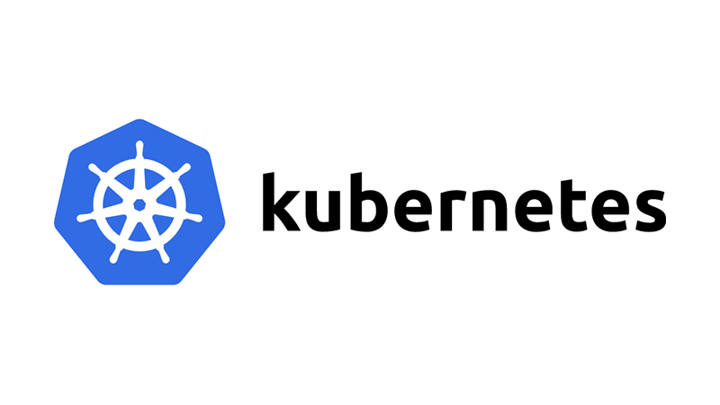

在K8S Volume中使用 subPath
在 2019-11-07 Thursday 发布于 DevOps 分类 • 1 min read

使用 subPath¶
有时，在单个 Pod 中共享卷以供多方使用是很有用的。 volumeMounts.subPath 属性可用于指定所引用的卷内的子路径，而不是其根路径。
下面是一个使用同一共享卷的、内含 LAMP 栈（Linux Apache Mysql PHP）的 Pod 的示例。 HTML 内容被映射到卷的 html 文件夹，数据库将被存储在卷的 mysql 文件夹中：
apiVersion: v1
kind: Pod
metadata:
name: my-lamp-site
spec:
containers:
- name: mysql
image: mysql
env:
- name: MYSQL_ROOT_PASSWORD
value: "rootpasswd"
volumeMounts:
- mountPath: /var/lib/mysql
name: site-data
subPath: mysql
- name: php
image: php:7.0-apache
volumeMounts:
- mountPath: /var/www/html
name: site-data
subPath: html
volumes:
- name: site-data
persistentVolumeClaim:
claimName: my-lamp-site-data
对上面的配置进行说明:
volumeMounts下面的name, 就是分配给这个pod的volume的名字site-data, mysql和php的html分别使用了它的子路径:mysql和htmlvolumes对于site-data这个volume, 是通过PVC的形式提供的, PVC的name为:my-lamp-site-data
使用带有扩展环境变量的 subPath¶
FEATURE STATE: Kubernetes v1.15 feature-state-beta.txt
使用 subPathExpr 字段从 Downward API 环境变量构造 subPath 目录名。 在使用此特性之前，必须启用 VolumeSubpathEnvExpansion 功能开关。 subPath 和 subPathExpr 属性是互斥的。
在这个示例中，Pod 基于 Downward API 中的 Pod 名称，使用 subPathExpr 在 hostPath 卷 /var/log/pods 中创建目录 pod1。 主机目录 /var/log/pods/pod1 挂载到了容器的 /logs 中。
apiVersion: v1
kind: Pod
metadata:
name: pod1
spec:
containers:
- name: container1
env:
- name: POD_NAME
valueFrom:
fieldRef:
apiVersion: v1
fieldPath: metadata.name
image: busybox
command: [ "sh", "-c", "while [ true ]; do echo 'Hello'; sleep 10; done | tee -a /logs/hello.txt" ]
volumeMounts:
- name: workdir1
mountPath: /logs
subPathExpr: $(POD_NAME)
restartPolicy: Never
volumes:
- name: workdir1
hostPath:
path: /var/log/pods
说明:
- env中, 配置了
POD_NAME这个环境变量, 这个变量的值来自于metadata.name, 即pod1 subPathExpr: $(POD_NAME)子路径为$(POD_NAME)这个变量, 就是pod1- volume用的是
hostPath, 实际路径为:/var/log/pods. 那么完整的path就是/var/log/pods/pod1
总结¶
subPath 还是挺实用的, 是个小功能, 但是确实能提交效率. 比如我昨天搭建的禅道的容器. 就是典型的LAMP: Linux + Apache + Mysql + PHP.
这些组件中,
Apache的www/html需要挂载mysql的数据库需要挂载php的应用数据需要挂载
如果没用subPath, 那么我得这么操作: (以nfs为例)
- nfs下手动创建3个子目录:
htmlmysqlphp - 创建3个PV, 分别为:
apache-volumemysql-volumephp-volume - 写3个PVC, 分别是:
apache-claimmysql-claimphp-claim. 而且2和3这两步最好一个pv+一个PVC来建. 避免bound乱了. - 再修改
Deployment配置, 一个个挂载上去.
△ 算下来,10步.
用了subPath, 确实节省了工作量: (还是以nfs为例)
- 创建1个PV, 为:
LAMP-volume - 创建1个PVC, 为:
LAMP-claim - 再修改
Deployment配置, 挂载一个PVC, 用subPath区分.
△ 算下来, 3步.